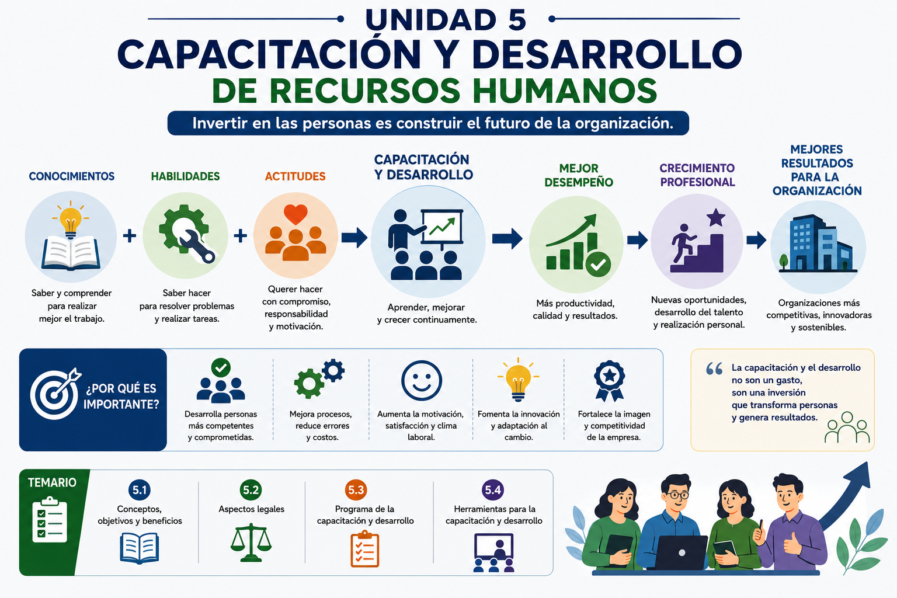
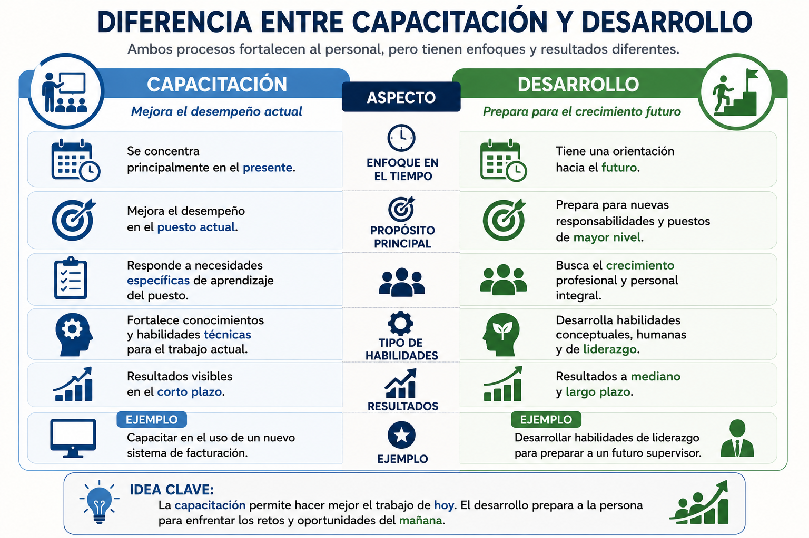
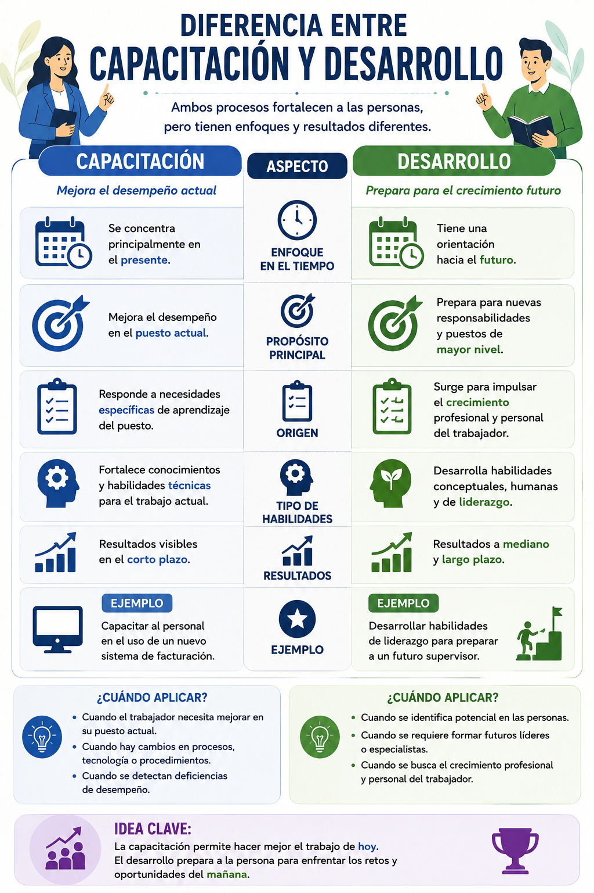
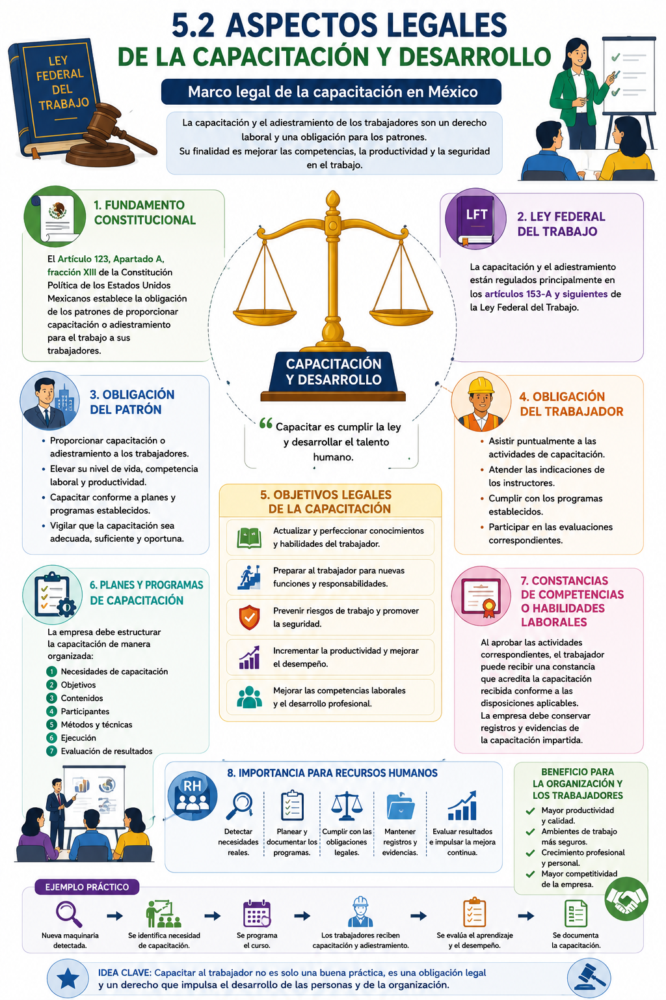
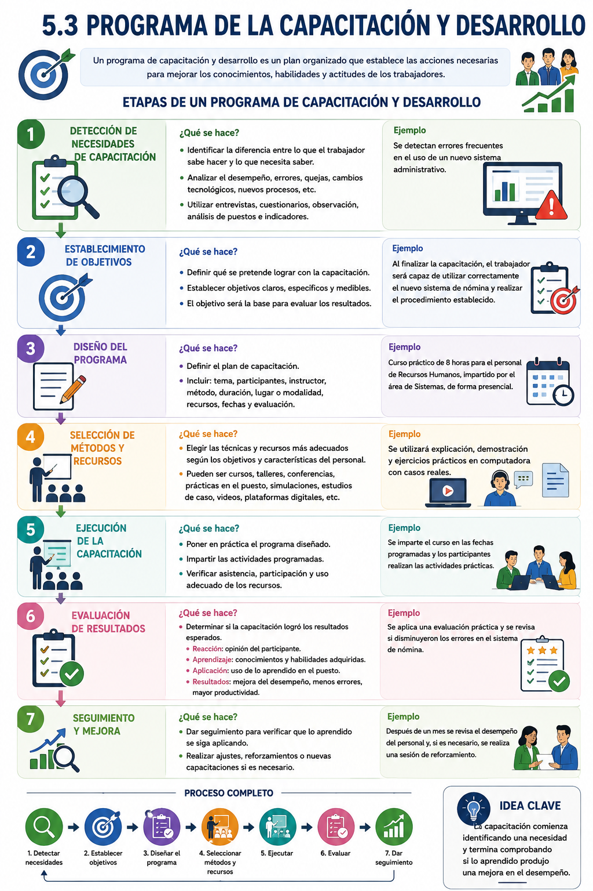
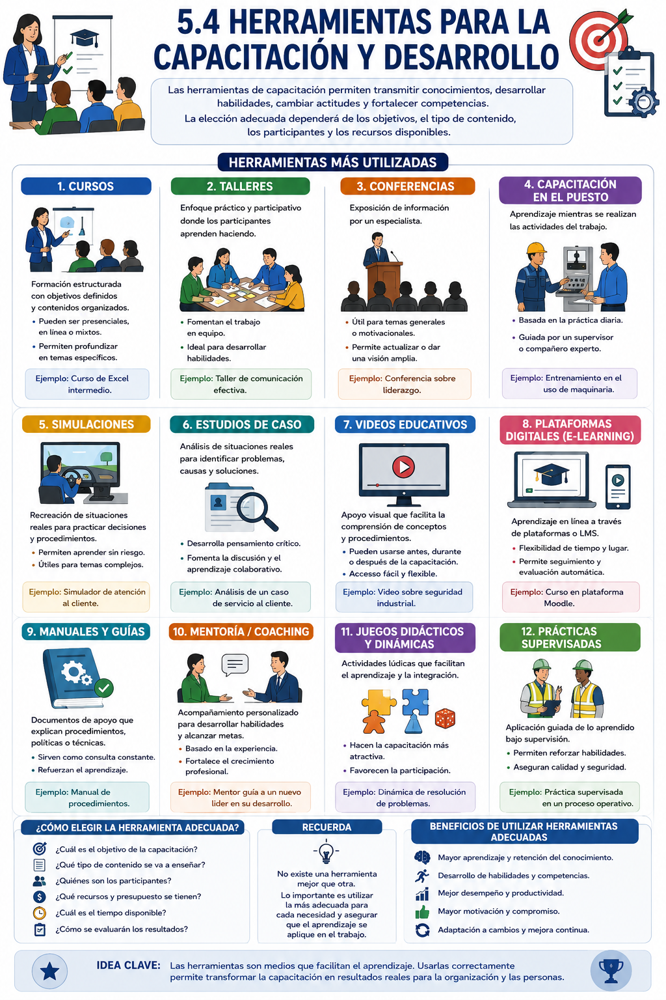

UNIDAD 5. CAPACITACIÓN Y DESARROLLO DE RECURSOS HUMANOS
UNIDAD 5. CAPACITACIÓN Y DESARROLLO DE RECURSOS HUMANOS
Introducción
La capacitación y el desarrollo de Recursos Humanos constituyen procesos fundamentales para mejorar los conocimientos, habilidades, actitudes y competencias de los trabajadores.
Las organizaciones necesitan actualizar constantemente a su personal debido a los cambios tecnológicos, nuevas formas de trabajo, modificaciones en los procesos, necesidades de los clientes y exigencias del entorno laboral.
La capacitación se orienta principalmente a preparar al trabajador para desempeñar mejor sus funciones actuales, mientras que el desarrollo tiene una perspectiva de mayor alcance, ya que busca preparar a las personas para asumir nuevas responsabilidades y favorecer su crecimiento profesional.
Objetivo de la unidad
Comprender la importancia de la capacitación y el desarrollo del personal, identificando sus objetivos, beneficios, aspectos legales, etapas para elaborar un programa de capacitación y las principales herramientas utilizadas para fortalecer las competencias de los trabajadores.
¿Qué aprenderá el alumno?
Al finalizar la unidad, el alumno será capaz de:
- Diferenciar los conceptos de capacitación y desarrollo.
- Reconocer sus principales objetivos y beneficios.
- Identificar los aspectos legales relacionados con la capacitación de los trabajadores.
- Comprender cómo se estructura un programa de capacitación y desarrollo.
- Identificar diferentes herramientas y técnicas de capacitación.
- Relacionar la capacitación con el desempeño, productividad y desarrollo del talento humano.
TEMARIO DE UNIDAD 5
TEMARIO DE UNIDAD 5
5. CAPACITACIÓN Y DESARROLLO DE RECURSOS HUMANOS:
5.1 Conceptos, objetivos y beneficios
5.2 Aspectos legales.
5.3 Programa de la capacitación y desarrollo
5.4 Herramientas para la capacitación y desarrollo
Capacitar no significa únicamente impartir cursos.
Capacitar no significa únicamente impartir cursos. Un proceso adecuado parte de identificar qué necesita aprender o mejorar el trabajador, establecer objetivos, seleccionar las herramientas apropiadas, ejecutar la capacitación y posteriormente evaluar sus resultados.
Podemos representarlo así:
Detectar necesidades → Planificar → Capacitar → Evaluar → Mejorar el desempeño

5.1 Conceptos, objetivos y beneficios de la capacitación y desarrollo de Recursos Humanos
5.1 Conceptos, objetivos y beneficios de la capacitación y desarrollo de Recursos Humanos
La capacitación y el desarrollo del personal son funciones esenciales de la administración de Recursos Humanos. Su propósito es fortalecer las capacidades de los trabajadores para que puedan desempeñar adecuadamente sus funciones actuales y, al mismo tiempo, prepararse para asumir nuevas responsabilidades dentro de la organización.
En un entorno laboral cambiante, los conocimientos adquiridos por una persona pueden resultar insuficientes con el paso del tiempo. La incorporación de nuevas tecnologías, modificaciones en los procesos, cambios legales, nuevas formas de organización y mayores exigencias de los clientes hacen necesario que los trabajadores mantengan una actualización constante de sus competencias.
Por esta razón, las organizaciones deben considerar la capacitación y el desarrollo como una inversión en el capital humano y no únicamente como una actividad ocasional.
Concepto de capacitación
La capacitación es un proceso sistemático y planificado mediante el cual una organización proporciona a sus trabajadores los conocimientos, habilidades y actitudes necesarios para mejorar su desempeño en el puesto de trabajo.
Su orientación es principalmente hacia el presente, porque busca que la persona pueda realizar mejor las funciones que actualmente tiene asignadas.
Por ejemplo, una empresa puede capacitar a sus trabajadores en:
- Manejo de maquinaria y equipo.
- Uso de nuevos programas o sistemas informáticos.
- Atención y servicio al cliente.
- Seguridad e higiene.
- Procedimientos administrativos.
- Técnicas de ventas.
- Manejo de conflictos.
- Actualización de disposiciones laborales.
Ejemplo
Una empresa implementa un nuevo sistema electrónico para registrar la asistencia de los trabajadores. Antes de utilizarlo, el personal responsable recibe capacitación sobre su funcionamiento.
En este caso, la capacitación busca proporcionar una habilidad necesaria para realizar correctamente una actividad actual.
Concepto de desarrollo
El desarrollo de Recursos Humanos es un proceso de formación orientado al crecimiento profesional del trabajador y a su preparación para asumir nuevas responsabilidades o puestos de mayor nivel en el futuro.
A diferencia de la capacitación, el desarrollo tiene una visión principalmente de mediano y largo plazo.
Puede incluir actividades relacionadas con:
- Liderazgo.
- Comunicación.
- Toma de decisiones.
- Trabajo en equipo.
- Desarrollo de habilidades directivas.
- Solución de problemas.
- Planeación.
- Formación de futuros supervisores y gerentes.
Ejemplo
Una empresa identifica a un trabajador con potencial para convertirse en supervisor. Para prepararlo, le proporciona formación en liderazgo, comunicación, manejo de personal y solución de conflictos.
En este caso no solamente se busca mejorar su puesto actual, sino prepararlo para una responsabilidad futura.

Objetivos de la capacitación y desarrollo
La capacitación no debe realizarse únicamente por cumplir con un programa. Debe responder a necesidades previamente identificadas y contribuir al cumplimiento de los objetivos de la organización.
1. Mejorar conocimientos
Permite actualizar o ampliar los conocimientos necesarios para realizar correctamente las actividades laborales.
2. Desarrollar habilidades
Busca que los trabajadores puedan ejecutar sus actividades con mayor precisión, eficiencia y seguridad.
3. Mejorar actitudes
También puede contribuir a fortalecer aspectos como responsabilidad, compromiso, servicio, comunicación y trabajo en equipo.
4. Incrementar la productividad
Un trabajador que conoce correctamente sus funciones y cuenta con las habilidades necesarias puede utilizar mejor los recursos y realizar sus actividades de manera más eficiente.
5. Reducir errores
La falta de conocimiento sobre procedimientos, equipos o responsabilidades puede provocar errores. Una capacitación adecuada ayuda a prevenirlos.
6. Facilitar la adaptación al cambio
Cuando una organización introduce nuevas tecnologías, procesos o formas de trabajo, la capacitación facilita que el personal pueda adaptarse.
7. Preparar al personal para nuevas responsabilidades
El desarrollo permite formar trabajadores que posteriormente puedan ocupar puestos de supervisión, coordinación, jefatura o dirección.
8. Fortalecer la competitividad
Las organizaciones necesitan personal actualizado y competente para responder a las exigencias del mercado.
Beneficios de la capacitación y desarrollo
Los beneficios pueden observarse tanto en la organización como en los trabajadores.
Beneficios para la organización
Una capacitación correctamente diseñada puede contribuir a:
- Incrementar la productividad.
- Mejorar la calidad del trabajo.
- Disminuir errores y desperdicios.
- Facilitar la incorporación de nuevas tecnologías.
- Mejorar el servicio al cliente.
- Fortalecer el trabajo en equipo.
- Desarrollar talento interno.
- Preparar posibles reemplazos para puestos importantes.
- Favorecer la adaptación a los cambios.
- Mejorar el desempeño general de la organización.
Beneficios para los trabajadores
También representa oportunidades para las personas porque les permite:
- Adquirir nuevos conocimientos.
- Desarrollar habilidades.
- Realizar su trabajo con mayor seguridad.
- Actualizar sus competencias profesionales.
- Prepararse para nuevas responsabilidades.
- Incrementar sus posibilidades de crecimiento.
- Mejorar su desempeño.
- Fortalecer su confianza profesional.
Relación entre capacitación, desempeño y resultados
La capacitación debe generar una cadena de mejora:
Necesidad detectada → Capacitación → Aprendizaje → Aplicación en el puesto → Mejor desempeño → Mejores resultados
Por ejemplo, si una empresa detecta numerosas quejas de clientes, puede determinar que parte del problema se relaciona con deficiencias en la atención.
Entonces:
Problema: quejas de clientes.
Necesidad: mejorar las habilidades de atención.
Capacitación: servicio y manejo de clientes.
Aplicación: el trabajador utiliza nuevas técnicas de atención.
Resultado esperado: disminución de quejas y mejora del servicio.
Esto demuestra que capacitar no consiste simplemente en impartir un curso. La capacitación debe responder a una necesidad concreta y producir cambios que puedan observarse o evaluarse.
Importancia para Recursos Humanos
El área de Recursos Humanos participa en la identificación de necesidades, planeación de actividades, coordinación de programas y evaluación de los resultados de la capacitación.
Por ello, debe responder preguntas como:
¿Qué necesita aprender el trabajador? → ¿Quién necesita capacitación? → ¿Para qué se capacitará? → ¿Cómo se realizará? → ¿Qué resultados se obtuvieron?
Idea clave
La capacitación fortalece el desempeño presente; el desarrollo prepara al trabajador para su crecimiento futuro. Ambos contribuyen al desarrollo de las personas y al cumplimiento de los objetivos de la organización.

5.2 Aspectos legales de la capacitación y desarrollo
5.2 Aspectos legales de la capacitación y desarrollo
En México, la capacitación y el adiestramiento de los trabajadores constituyen un derecho laboral y una obligación para los patrones. Su fundamento se encuentra principalmente en la Constitución Política de los Estados Unidos Mexicanos y en la Ley Federal del Trabajo (LFT).
El objetivo de estas disposiciones es que los trabajadores tengan la oportunidad de mejorar sus conocimientos, competencias y habilidades, además de contribuir a incrementar la productividad y prevenir riesgos de trabajo.
Fundamento constitucional
El Artículo 123, Apartado A, fracción XIII de la Constitución establece la obligación de las empresas de proporcionar capacitación o adiestramiento para el trabajo a sus trabajadores.
Esto significa que la capacitación no depende únicamente de la voluntad de la empresa, sino que forma parte de las obligaciones establecidas dentro del marco laboral mexicano.
Ley Federal del Trabajo
La regulación específica se encuentra principalmente en los artículos 153-A y siguientes de la Ley Federal del Trabajo, donde se establecen disposiciones relacionadas con la capacitación y el adiestramiento.
Obligación del patrón
Los patrones deben proporcionar a sus trabajadores capacitación o adiestramiento que les permita elevar su nivel de vida, competencia laboral y productividad.
La capacitación debe desarrollarse conforme a los planes y programas establecidos en la organización y de acuerdo con las disposiciones aplicables.
Obligación del trabajador
El trabajador también tiene responsabilidades dentro del proceso de capacitación. Entre ellas se encuentran:
- Asistir puntualmente a las actividades correspondientes.
- Atender las indicaciones de las personas que impartan la capacitación.
- Cumplir con los programas establecidos.
- Presentar las evaluaciones correspondientes cuando sean requeridas.
Por lo tanto, la capacitación implica una responsabilidad compartida entre empresa y trabajador.
Objetivos legales de la capacitación
Desde la perspectiva de la legislación laboral, la capacitación y el adiestramiento buscan, entre otros propósitos:
Actualizar y perfeccionar conocimientos y habilidades.
Permitir que el trabajador mejore las competencias necesarias para realizar sus actividades.
Preparar al trabajador para nuevas funciones.
Facilitar su preparación para ocupar una vacante o puesto de nueva creación.
Prevenir riesgos de trabajo.
Proporcionar conocimientos que contribuyan a realizar las actividades de manera segura.
Incrementar la productividad.
Favorecer un mejor aprovechamiento de los recursos y mejorar el desempeño laboral.
Mejorar las competencias laborales.
Fortalecer las capacidades necesarias para desempeñar adecuadamente las funciones del puesto.
Planes y programas de capacitación
Las organizaciones deben estructurar la capacitación de manera organizada, considerando aspectos como:
Necesidades de capacitación → Objetivos → Contenidos → Participantes → Métodos → Ejecución → Evaluación
Esto permite que la capacitación tenga una finalidad concreta y esté relacionada con las necesidades reales de los trabajadores y de la organización.
Constancias de competencias o habilidades laborales
Cuando el trabajador aprueba las actividades correspondientes, puede recibir una constancia de competencias o habilidades laborales, que acredita la capacitación recibida conforme a las disposiciones aplicables.
Este tipo de documentación también permite a la organización mantener evidencia y control sobre la capacitación proporcionada.
Importancia para Recursos Humanos
El área de Recursos Humanos debe procurar que los programas de capacitación:
- Respondan a necesidades reales.
- Se encuentren correctamente planeados y documentados.
- Consideren las obligaciones laborales aplicables.
- Mantengan registros y evidencias.
- Evalúen los resultados obtenidos.
- Contribuyan al desarrollo de competencias y a la prevención de riesgos.
Ejemplo sencillo
Una empresa incorpora una nueva maquinaria.
Nueva maquinaria → Se detecta necesidad de capacitación → Se programa el curso → Los trabajadores reciben capacitación y adiestramiento → Se evalúa el aprendizaje → Se documenta la capacitación.
De esta manera, la empresa no solamente busca mejorar la productividad, sino también que el trabajador conozca el procedimiento correcto y seguro para realizar sus actividades.
Idea clave
En México, capacitar al trabajador no es solamente una buena práctica de Recursos Humanos; también forma parte de las obligaciones laborales del patrón y del derecho de los trabajadores.

5.3 Programa de capacitación y desarrollo
5.3 Programa de capacitación y desarrollo
Un programa de capacitación y desarrollo es un plan organizado que establece las acciones necesarias para mejorar los conocimientos, habilidades, actitudes y competencias de los trabajadores.
Su finalidad es que la capacitación no se realice de manera improvisada, sino que responda a necesidades reales de la organización y del personal.
Un programa adecuado debe responder preguntas como: ¿qué se necesita mejorar?, ¿quién necesita capacitación?, ¿qué debe aprender?, ¿cómo se capacitará?, ¿cuándo se realizará? y ¿cómo se evaluarán los resultados?
Etapas de un programa de capacitación y desarrollo
1. Detección de necesidades de capacitación
Es el punto de partida. Consiste en identificar la diferencia entre lo que el trabajador sabe o puede hacer actualmente y lo que necesita saber o hacer para desempeñar correctamente su puesto.
Las necesidades pueden detectarse mediante:
- Evaluaciones del desempeño.
- Entrevistas y cuestionarios.
- Observación directa.
- Análisis de puestos.
- Indicadores de productividad.
- Errores frecuentes.
- Quejas de clientes.
- Cambios tecnológicos o de procedimientos.
Ejemplo: una empresa detecta errores frecuentes en el manejo de un nuevo sistema administrativo. Esto indica una necesidad de capacitación.
2. Establecimiento de objetivos
Una vez identificada la necesidad, se determina qué se pretende lograr con la capacitación.
Los objetivos deben ser claros y, cuando sea posible, medibles.
Por ejemplo:
Al finalizar la capacitación, el trabajador será capaz de utilizar correctamente el nuevo sistema de nómina y realizar el procedimiento establecido.
El objetivo permite posteriormente determinar si la capacitación produjo los resultados esperados.
3. Diseño del programa
En esta etapa se determina cómo se realizará la capacitación.
El programa debe establecer:
Tema: ¿qué se enseñará?
Participantes: ¿quiénes recibirán la capacitación?
Instructor: ¿quién la impartirá?
Método: ¿cómo se enseñará?
Duración: ¿cuánto tiempo se requiere?
Lugar o modalidad: presencial, virtual o mixta.
Recursos: materiales, equipos, instalaciones o plataformas.
Fechas: ¿cuándo se realizará?
Evaluación: ¿cómo se comprobará el aprendizaje?
4. Selección de métodos y recursos
La organización debe elegir las herramientas de capacitación más adecuadas según los objetivos y características de los participantes.
Puede utilizar:
- Cursos.
- Talleres.
- Conferencias.
- Capacitación en el puesto.
- Simulaciones.
- Estudios de caso.
- Videos.
- Plataformas digitales.
- Manuales.
- Prácticas supervisadas.
No todas las necesidades requieren el mismo método.
Por ejemplo, para aprender a utilizar una maquinaria puede ser más apropiada una demostración y práctica supervisada que únicamente una conferencia.
5. Ejecución de la capacitación
Consiste en poner en práctica el programa diseñado.
Durante esta etapa se desarrollan las actividades programadas y se debe verificar la asistencia, participación, cumplimiento de contenidos, utilización de recursos y desempeño del instructor.
6. Evaluación de resultados
Después de la capacitación es necesario determinar si realmente funcionó.
Puede evaluarse:
Reacción: ¿qué opinó el participante de la capacitación?
Aprendizaje: ¿qué conocimientos o habilidades adquirió?
Aplicación: ¿utiliza lo aprendido en su puesto?
Resultados: ¿mejoró el desempeño, disminuyeron los errores o aumentó la productividad?
Esta etapa es fundamental porque asistir a un curso no garantiza que exista aprendizaje ni que mejore el desempeño.
7. Seguimiento y mejora
Finalmente, Recursos Humanos debe comprobar si los conocimientos adquiridos continúan aplicándose en el trabajo.
Si los resultados no son los esperados, pueden realizarse ajustes, reforzamientos o nuevas actividades de capacitación.
Ejemplo
Una empresa incorpora un nuevo sistema de nómina y detecta que el personal de Recursos Humanos tiene dificultades para utilizarlo.
1. Necesidad: aprender a utilizar el nuevo sistema.
2. Objetivo: procesar correctamente la nómina utilizando el software.
3. Diseño: curso práctico de 8 horas para el personal de RH.
4. Método: explicación + demostración + ejercicios prácticos.
5. Ejecución: se imparte la capacitación.
6. Evaluación: cada participante procesa una nómina de prueba.
7. Seguimiento: después de un mes se revisa si disminuyeron los errores.
Proceso completo
Detectar necesidades → Establecer objetivos → Diseñar el programa → Seleccionar métodos y recursos → Ejecutar → Evaluar → Dar seguimiento
Idea clave
Un programa de capacitación comienza identificando una necesidad y termina comprobando si lo aprendido produjo una mejora en el desempeño.

5.4 Herramientas para la capacitación y desarrollo
5.4 Herramientas para la capacitación y desarrollo
Las herramientas para la capacitación y desarrollo son los métodos, técnicas y recursos que utilizan las organizaciones para facilitar el aprendizaje de los trabajadores y desarrollar sus conocimientos, habilidades, actitudes y competencias.
La selección de una herramienta depende de factores como el objetivo de la capacitación, el contenido que se desea enseñar, las características de los participantes, el tiempo disponible, los recursos de la organización y la forma en que se evaluará el aprendizaje.
No existe una herramienta que sea adecuada para todas las situaciones. Recursos Humanos debe seleccionar aquella que permita alcanzar de manera más efectiva los objetivos establecidos en el programa de capacitación.
1. Cursos
Los cursos son actividades de formación estructuradas mediante las cuales se desarrollan determinados contenidos durante un periodo establecido.
Pueden realizarse de manera presencial, virtual o mixta y combinar explicaciones, ejercicios, evaluaciones y actividades prácticas.
Ejemplo: curso de Excel intermedio para personal administrativo.
Son especialmente útiles cuando se necesita proporcionar conocimientos organizados a un grupo de trabajadores.
2. Talleres
Los talleres se caracterizan por tener un enfoque principalmente práctico y participativo. Los trabajadores no solamente reciben información, sino que realizan ejercicios y actividades relacionadas con el aprendizaje.
Permiten desarrollar habilidades mediante la participación y el intercambio de experiencias.
Ejemplo: taller de comunicación efectiva para supervisores.
Son adecuados para desarrollar competencias relacionadas con comunicación, liderazgo, trabajo en equipo y solución de problemas.
3. Conferencias
Las conferencias consisten en la exposición de un tema por parte de una persona especialista.
Permiten transmitir información a un número considerable de participantes y son útiles para presentar nuevos conocimientos, tendencias o experiencias profesionales.
Ejemplo: conferencia sobre liderazgo y motivación laboral.
Su principal ventaja es la posibilidad de proporcionar información especializada; sin embargo, generalmente tienen menor participación práctica que un taller.
4. Capacitación en el puesto
La capacitación en el puesto de trabajo ocurre mientras el trabajador realiza las actividades propias de su función.
Normalmente recibe orientación de un supervisor, instructor o trabajador con mayor experiencia.
Ejemplo: un trabajador aprende a operar una máquina acompañado por un supervisor.
Tiene la ventaja de relacionar directamente el aprendizaje con las actividades reales del puesto.
5. Simulaciones
Las simulaciones reproducen situaciones similares a las que pueden presentarse en el ambiente laboral.
Permiten practicar procedimientos, tomar decisiones y cometer errores dentro de un ambiente controlado antes de enfrentarse a una situación real.
Ejemplo: simulación de atención a un cliente que presenta una queja.
Son particularmente útiles cuando practicar directamente en una situación real puede representar riesgos, costos o consecuencias importantes.
6. Estudios de caso
El estudio de caso consiste en presentar una situación real o ficticia para que los participantes la analicen, identifiquen problemas y propongan alternativas de solución.
Esta herramienta desarrolla principalmente:
- Pensamiento crítico.
- Análisis.
- Toma de decisiones.
- Solución de problemas.
- Trabajo colaborativo.
Ejemplo: analizar el caso de una empresa que presenta una elevada rotación de personal y determinar sus posibles causas.
7. Videos educativos
Los videos educativos permiten presentar información de manera visual y pueden complementar otras técnicas de capacitación.
Pueden utilizarse para explicar procedimientos, presentar ejemplos, demostrar actividades o introducir determinados temas.
Ejemplo: video sobre procedimientos de seguridad industrial.
Su ventaja es que pueden reproducirse varias veces y utilizarse antes, durante o después de una capacitación.
8. Plataformas digitales o e-learning
El e-learning utiliza tecnologías digitales para proporcionar capacitación a través de internet o plataformas educativas.
Puede incluir:
- Videos.
- Lecturas.
- Presentaciones.
- Cuestionarios.
- Foros.
- Actividades interactivas.
- Evaluaciones.
Ejemplo: un curso de actualización de Recursos Humanos impartido mediante una plataforma educativa.
Estas herramientas ofrecen flexibilidad porque permiten que los participantes accedan a los contenidos desde diferentes lugares y, dependiendo del programa, en distintos horarios.
De hecho, eXeLearning, que estás utilizando para organizar este curso, es un ejemplo de una herramienta que permite crear y estructurar contenidos educativos digitales.
9. Manuales y guías
Los manuales y guías son documentos que contienen instrucciones, procedimientos, políticas o información necesaria para realizar determinadas actividades.
Funcionan como material de consulta y apoyo después de la capacitación.
Ejemplo: manual de procedimientos para la elaboración de la nómina.
Son especialmente útiles cuando el trabajador necesita consultar periódicamente los pasos de un procedimiento.
10. Mentoría y coaching
La mentoría consiste en el acompañamiento de una persona con experiencia que orienta a otro trabajador para favorecer su aprendizaje y desarrollo profesional.
El coaching, por su parte, se orienta al desarrollo de determinadas capacidades y al logro de objetivos mediante un proceso de acompañamiento.
Ejemplo: un gerente experimentado orienta a un supervisor que está siendo preparado para asumir mayores responsabilidades.
Estas herramientas se relacionan especialmente con el desarrollo profesional y de liderazgo.
11. Juegos didácticos y dinámicas
Las dinámicas y juegos permiten desarrollar contenidos mediante actividades participativas.
Pueden utilizarse para reforzar conocimientos y desarrollar habilidades relacionadas con:
- Trabajo en equipo.
- Comunicación.
- Liderazgo.
- Creatividad.
- Solución de problemas.
Ejemplo: una dinámica en equipos para resolver un problema relacionado con conflictos laborales.
El recurso debe tener un propósito educativo claro; no se trata únicamente de realizar una actividad recreativa.
12. Prácticas supervisadas
Las prácticas supervisadas permiten que el trabajador aplique directamente lo aprendido mientras recibe orientación y retroalimentación.
Ejemplo: después de recibir capacitación sobre un nuevo procedimiento, el trabajador lo realiza bajo la supervisión de una persona experimentada.
Esta herramienta ayuda a comprobar si el participante puede trasladar los conocimientos teóricos a una actividad real.
¿Cómo seleccionar la herramienta adecuada?
Antes de elegir una herramienta, Recursos Humanos debe considerar:
¿Qué queremos que aprenda el trabajador?
Determinar el objetivo de la capacitación.
¿Qué tipo de contenido se enseñará?
No es lo mismo enseñar un concepto que desarrollar una habilidad práctica.
¿Quiénes recibirán la capacitación?
Se deben considerar las características y necesidades de los participantes.
¿Qué recursos están disponibles?
Presupuesto, instalaciones, instructores, tecnología y materiales.
¿Cuánto tiempo tenemos?
Algunas herramientas requieren mayor duración que otras.
¿Cómo comprobaremos el aprendizaje?
La herramienta debe permitir alcanzar resultados que posteriormente puedan evaluarse.
Ejemplo de selección
Una empresa necesita enseñar a sus trabajadores a utilizar una nueva maquinaria.
Una conferencia puede servir para explicar conceptos generales, pero probablemente no será suficiente para desarrollar la habilidad necesaria.
Una mejor combinación sería:
Explicación inicial → Demostración → Capacitación en el puesto → Práctica supervisada → Evaluación
Así, la organización utiliza diferentes herramientas de acuerdo con el aprendizaje que necesita desarrollar.
Herramientas tradicionales y digitales
Actualmente las organizaciones pueden combinar herramientas:
Tradicionales: cursos presenciales, talleres, conferencias, manuales y capacitación en el puesto.
Digitales: plataformas de e-learning, videoconferencias, videos educativos, contenidos interactivos y evaluaciones en línea.
La elección no debe depender únicamente de cuál herramienta sea más moderna, sino de cuál permite alcanzar mejor el objetivo de capacitación.
Idea clave
Las herramientas son medios para lograr el aprendizaje, no el objetivo final. Una capacitación efectiva selecciona la herramienta adecuada y comprueba que lo aprendido se aplique en el trabajo.
